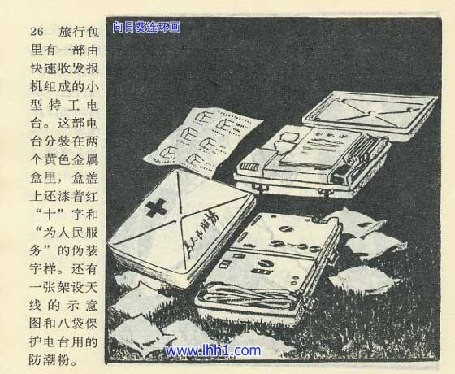
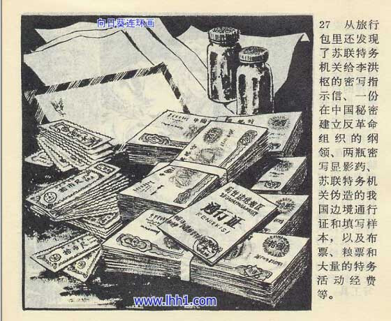
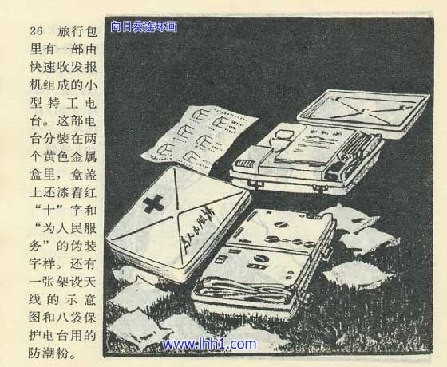
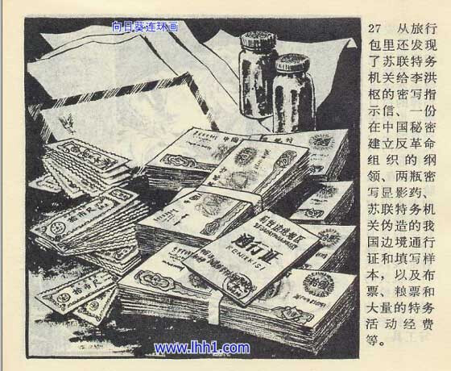

旅行包里有一部由快速收发报机组成的小型特工台。这部电台分装在两个黄色金属盒里，盒盖上还漆着红“十”字和“为人民服务”的伪装字样。还有一张架设天线的示意图和八袋保护电台用的防潮粉。
从旅行包里还发现了苏联特务机关给李洪枢的密写指示信、一份在中国秘密建立反革命组织的纲领、两瓶密写显影药、 苏联特务机关伪造的我国边境通行证和填写样本，以及布票、粮票和大量的特务活动经费。
苏修真是太坏了


气得我要拿金属探测器去山上找找有没有埋好的盒子。
苏修在德国的森林里埋的R-394KM。